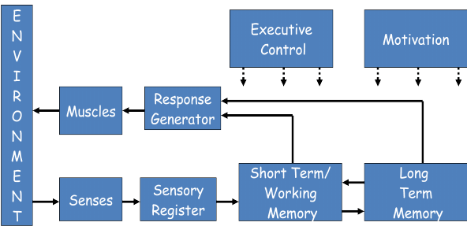

INTRODUCTION
In other to fully understand the need for this course, it is important to have a full grasp of what information processing is; it focuses on the idea that humans process the information they receive from the environment, in the manner of a computer, rather than merely responding to stimuli. When you look at your computer, do you think of your brain? It might sound like a strange idea, but it's pretty much the connection psychologists have drawn in the development of the information processing theory. With the momentum of technology in the past few decades, there have been comparisons made between the way a computer operates and the way our mind does. Just as a computer receives stores and brings up information, so do our minds as we live day by day. The student's brain brings information in, manipulates it, and stores it ready for future use – this is the learning aspect. In information processing, as the student takes in information, that information is first briefly stored as sensory storage; then moved to the short term or working memory; and then either forgotten or transferred to the long term memory. Information processing cut across several fields including education, finance, and medical sciences e.t.c. It centralizes on cognitive processes which are important in all fields not only in education.
THE NEED FOR STUDYING INFORMATION PROCESSING
- long-term learning objectives: Since information processing involves how human digest information and study of how humans learn. How students learn, acquires new information, and retains previous information guides selection of long-term learning objectives.
- Select methods of effective instruction: It helps in the selection of instructional methods that will be best effective in the classroom considering the mental capacity of the learners.
- Categorize learners: There are several levels at which individuals can adequately process information, so studying information processing helps the teacher to identify the different categories at which learners falls in terms of memory capabilities and aptly place them in their respective categories.
- Facilitates Learning Methods: It is essential to always find new and interesting methods in helping students remember new information that is taught to enhance their understanding better.
- Evaluation: With a vast understanding of information processes, it helps teachers to be able to test and evaluate their learners such that the examination questions wouldn’t be too cumbersome for the learners and will appropriately fit to their mental capabilities.
- Organized Learning: If learning—relatively permanently change—is to take place, new information must be transferred into long-term memory. Therefore, repetition and maintenance rehearsal are not sufficient to produce a lasting effect. This has great relevance to instruction and teaching, for if the aim of education is learning, information must be presented in such a way that it can be incorporated into the memory structure.
DIAGRAM REPRESENTATION OF INFORMATION PROCESSING
WHAT IS ENCODING?
Encoding is the process of getting information into memory. If information or stimuli never gets encoded, it will not be remembered. Encoding is the first stage of the memory process. Encoding occurs when information is translated into a form that can be processed mentally. Information from the environment is constantly reaching your senses in the forms of stimuli. Encoding allows you to change the stimuli so that you may put it into your memory. It is similar to librarians classifying books before placing them on a shelf. As librarians encode/label books so patrons to easily locate them, you encode/label information before placing the information into your memory.
TWO WAYS OF ENCODING
Simply receiving sensory input is not sufficient to encode information. You must attend to and process that input. Encoding that information occurs through both automatic processing and effortful processing.
- Automatic processing: occurs without any conscious awareness. It occurs effortlessly, automatically, without you having to think about it. Examples include details like time, space, frequency, personal experience, and some motor skills learning. You are always encoding the events of your life. Every day you encode events and can remember what happened, at least for a while. For example, you probably can remember what you had for dinner last night, even though you didn’t intentionally try to remember that information.
- Effortful processing For example, you would need to pay attention if someone gave you their telephone number or gave you a list of items to pick up at the store. Those types of encoding are effortful processing, since it involves effort. Effortful processing occurs when you consciously try to remember information. It requires special attention, thought, and practice. In other words, you have to put in effort to get the information in to memory.
KINDS OF ENCODING
When information comes into your sensory memory, it needs to be changed into a form that can be stored. There are three main ways in which information can be encoded/changed:
- Visual encoding: Information is represented as a picture.
- Acoustic encoding: Information is represented as sounds.
- Semantic encoding: Information is represented by its meaning to you When you are exposed to information through your senses, you take the information and begin processing it in visual, acoustic, and/or semantic form. This means that you take in information, either as a picture, a sound, or give the information meaning. For example, if you look at a telephone number on a piece of paper, you are using visual encoding. If you say the number out loud, you are acoustically encoding. If you notice that some of the digits sequentially represent a special date, you give that number meaning and thus semantically encoding.
WHAT IS DECODING
It is important to decode after encoding, information encoded needs to be retrieved and that retrieval process can be regarded as decoding. Decoding is a vital and important process in everyday lives of human it involves remembering the mobile number stored in the memory, ability to retrieve information stored in the examination hall etc. Decoding can be regarded as the process of accessing stored information. Stored information in this context infers information encoded which needs decoding.
TWO METHODS OF RETRIEVING MEMORIES
- Recognition Recognition is the association of something with something previously experienced. It involves comparing new information with information stored in memory. The recognition process is initiated as a response to a sensory cue. When you see something, you compare it to information stored in your memory. Hence, you recognize it. Recall & recognition are closely related. Recall provides the material in memory, while recognition is the process of accepting or rejecting. Recognition is better than recall as an index of retention. Recognition starts with the object given whereas recalls find the object from the mind. Thus, when we meet a person, recognize that person’s face, but may not be able to recall his name. Recognition is more a passive behavior than an active process like recall. For example, you may go to a party and see a person you recognize from a prior experience.
- Recall Recall is the retrieval of information from memory without a cue. If a person asks you a question, you must search your memory to recall the answer. It involves remembering a fact, event, or other information that is not currently physically present. # We learn because we need to recall them at some point of time or other. So we can say that recall is the mental revival of past experiences. The least index of retention because we are unable to remember even though we know it. Recall depends on the mental condition & the memory trace formed For example, you may have to recall the list of items you had on your shopping list.
DECAYDENT AS A RESULT OF NON-USE
When talking about decadent as a result of non-use then we are talking about the decay theory. The decay theory proposes that memory fades due to the mere passage of time. Information is therefore less available for later retrieval as time passes and memory, as well as memory strength, wears away. When we learn something new, a neurochemical "memory trace" is created. However, over time this trace slowly disintegrates. Actively rehearsing information is believed to be a major factor counteracting this temporal decline. It is widely believed that neurons die off gradually as we age, yet some older memories can be stronger than most recent memories. Thus, decay theory mostly affects the short-term memory system, meaning that older memories (in long-term memory) are often more resistant to shocks or physical attacks on the brain. It is also thought that the passage of time alone cannot cause forgetting, and that decay theory must also take into account some processes that occur as more time passes. Forgetting is a process of fading of the learnt matter with passage of time. According to this view, the vivid impressions created in the cerebral cortex fade away as time passes. Such fading or decay could be the result of the normal metabolic processes of the brain. As time passes, these processes might cause the traces of material once learned to disintegrate gradually and eventually to disappear altogether.
SHORT-TERM MEMORY
The second stage of information processing is the working or short-term memory. This stage is often viewed as active or conscious memory because it is the part of memory that is being actively processed while new information is being taken in. Short-term memory has a very limited capacity and unrehearsed information will begin to be lost from it within 15-30 seconds if other action is not taken. There are two main ways that are effective in processing information while it is in short-term memory. Rote or maintenance rehearsal is the first but less desirable of these methods. This type of rehearsal is intended only to keep information until it can be processed further. It consists mainly of some sort of repetition of the new information, and if it is not processed further will be lost. In fact, studies on the limitations of working memory have revealed a specific number of units that the mind can process at any given time, and it is now generally accepted that 5 + 2 is the maximum number of stimuli that can be processed at once. There are several types of activities that one can perform to encode new information, but the importance of encoding cannot be overstated. Maintenance rehearsal schemes can be employed to keep information in short-term memory, but more complex elaboration is necessary to make the transfer to long-term memory. It is absolutely necessary for new information to somehow be incorporated into the memory structure in order for it to be retained. There are many suggested models for encoding, but there are basically three ways in which retention occurs. A stimulus can be an almost exact match with existing structures in which case it would be simply added to the mental representation and no change would be made to the structure except its addition. If the new stimulus does not exactly match the existing structure, the structure itself would be adapted to allow for additional characteristics or definitions in which case there would be a fundamental change to the existing structure, which would broaden the defining structures. Finally, if the new stimulus were vastly different from any existing structure, a totally new one would be created in memory. This new structure could in some way be linked to relevant structures, but it would stand alone as a new unit. At any rate, the incoming information must be acted on and through existing structures and incorporated into those systems in some way for acquisition to occur. The processing of this new stimulus takes place in short-term memory, and the body with which the information is worked is the long-term memory.
LONG-TERM MEMORY
As discussed with short-term memory, long-term memory houses all previous perceptions, knowledge, and information learned by an individual, but it is not a static file system that is used only for information retrieval. Abbot (2002) suggests that long-term memory “is that more permanent store in which information can reside in a dormant state – out of mind and unused – until you fetch it back into consciousness”. In order to incorporate new information, long-term memory must be in communication with short-term memory and must be dynamic. There are several categories of long-term memory, and there are many suggestions as to how memory units are represented in the mind. While it seems that it might be sufficient to understand simply that there are individual units and structures that exist in long-term memory, the specific way or ways that information is stored offers extremely important information. If the knowledge unit is pictorial rather than verbal, for example, it would seem to make sense that images would be more easily and readily stored in memory. If the reverse were true, information should be presented in verbal constructs.
REFERENCES
- Abbot, B. (2002). Human memory. Fort Wayne: Indiana University-Purdue University at Fort Wayne, Psychology Department. Retrieved June 22, 2002, from
- http://users.ipfw.edu/abbot/120/LongTermMemory.html
- https://lo.unisa.edu.au/mod/book/view.php?id=610988&chapterid=120209
- https://en.m.wikipedia.org/wiki/Decay_theory
- https://thepeakperformancecenter.com/educationallearning/learning/memory/classification-of-memory/memory-process/